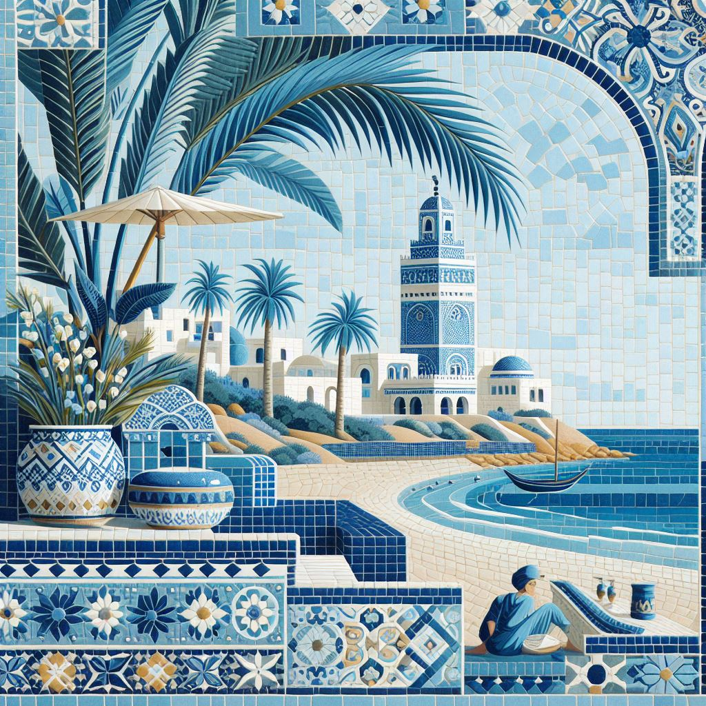
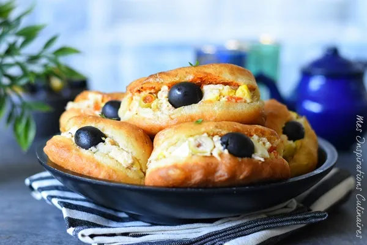

Art et Architecture
La Tunisie est un pays riche en diversité architecturale, avec des influences qui vont de l'antiquité à l'époque moderne. Explorez les différents styles architecturaux tunisiens, tels que l'architecture mauresque avec ses arcs en ogive et ses motifs géométriques, l'architecture ottomane avec ses cours intérieures et ses ornements floraux, ainsi que l'architecture coloniale française qui a laissé son empreinte dans les villes côtières.

Gastronomie
La cuisine tunisienne est un mélange délicieux de saveurs méditerranéennes, arabes et berbères. Découvrez les plats emblématiques comme le couscous, la brick à l'œuf, les tajines, ou comme là les fricassés.
